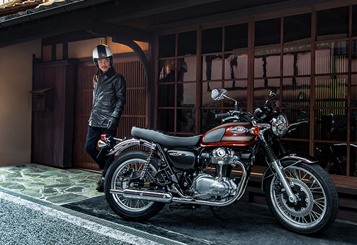

가와사키의 오리지널 아이콘
ORIGINAL ICON OF KAWASAKI
가와사키의 장인정신을 담은 W800은 그들의 철학을 고스란히 계승한 헤리티지 모델로 1965년에 첫 생산되어 전 세계시장에서 가와사키라는 회사가 고배기량 모터사이클 제작업체로서의 확실한 위상을 만들어준 'W1'에 대한 오마주입니다. 이후 W2를 거쳐 1974년 출시된 W3를 끝으로 'W'시리즈는 역사의 뒤안길로 완전히 사라지는 듯 보였으나 25년 만인 1999년에 W650으로 부활했고, 시장에서 높은 판매량으로 결코 인기가 식지 않은 모습을 보여주며 'W'시리즈는 구형모델이 아닌 헤리티지 라인업으로서 완벽하게 자리를 잡았습니다.